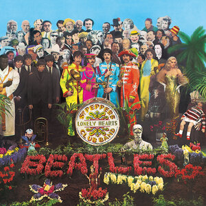

|

|
Sgt. Pepper's Lonely Hearts Club Band
is the eighth studio album by the English rock band the Beatles.
Released on 26 May 1967,Sgt. Pepper is regarded by
musicologists as an early concept album that advanced the roles of
sound composition, extended form, psychedelic imagery, record
sleeves, and the producer in popular music. The album had an
immediate cross-generational impact and was associated with
numerous touchstones of the era's youth culture, such as fashion,
drugs, mysticism, and a sense of optimism and empowerment.
|